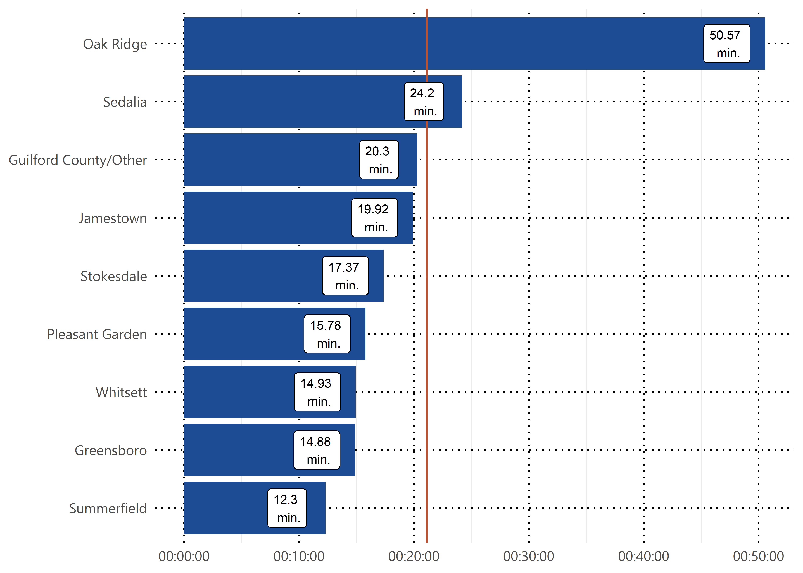
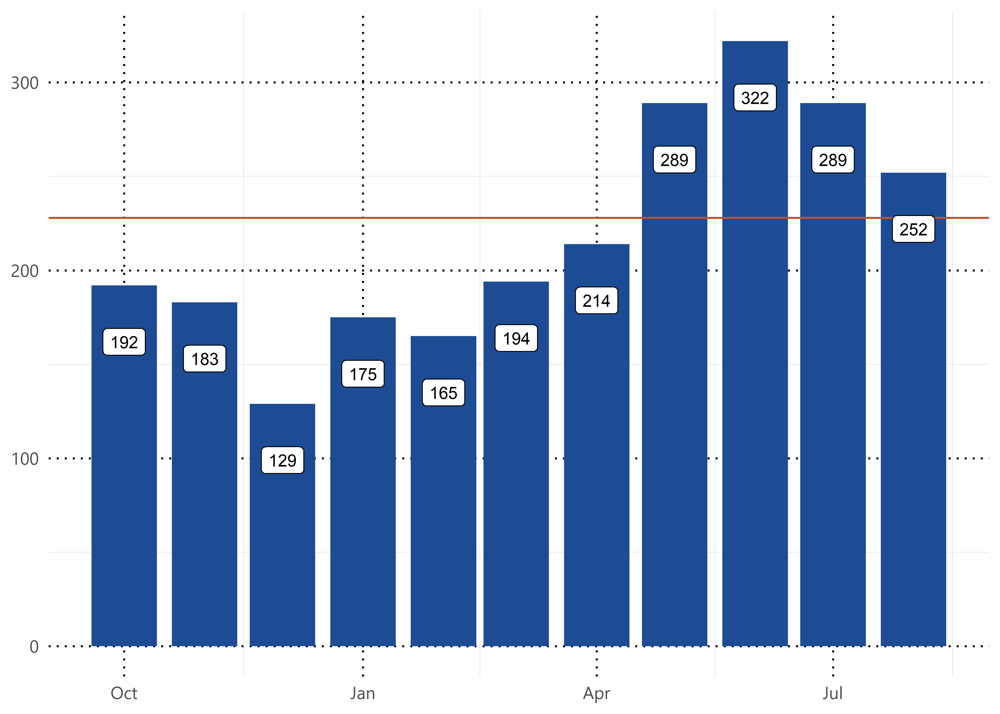
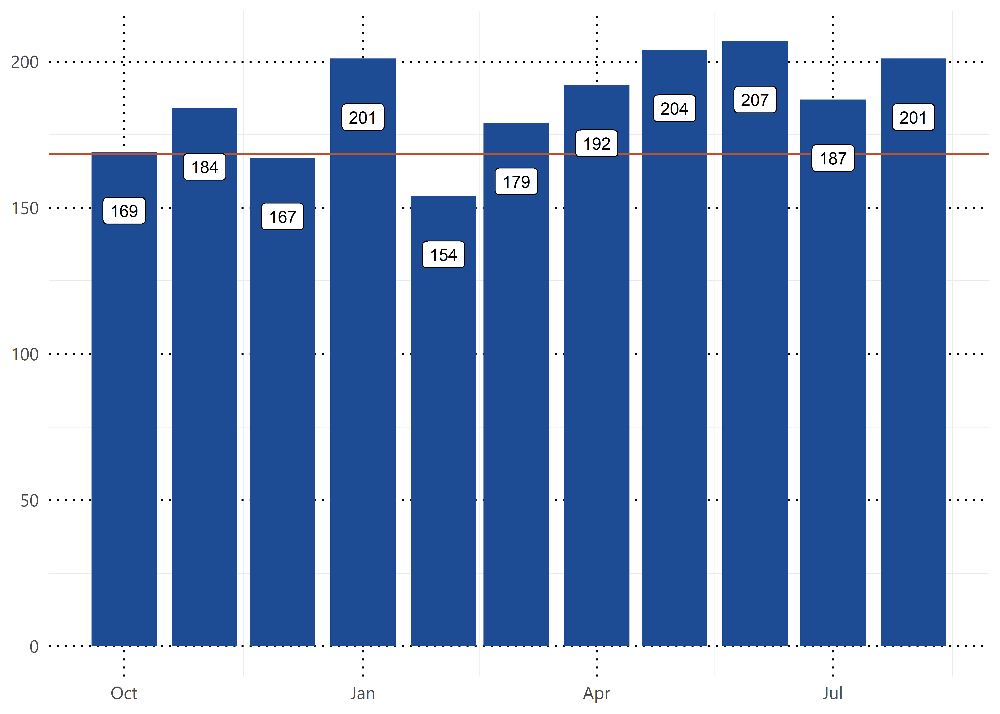
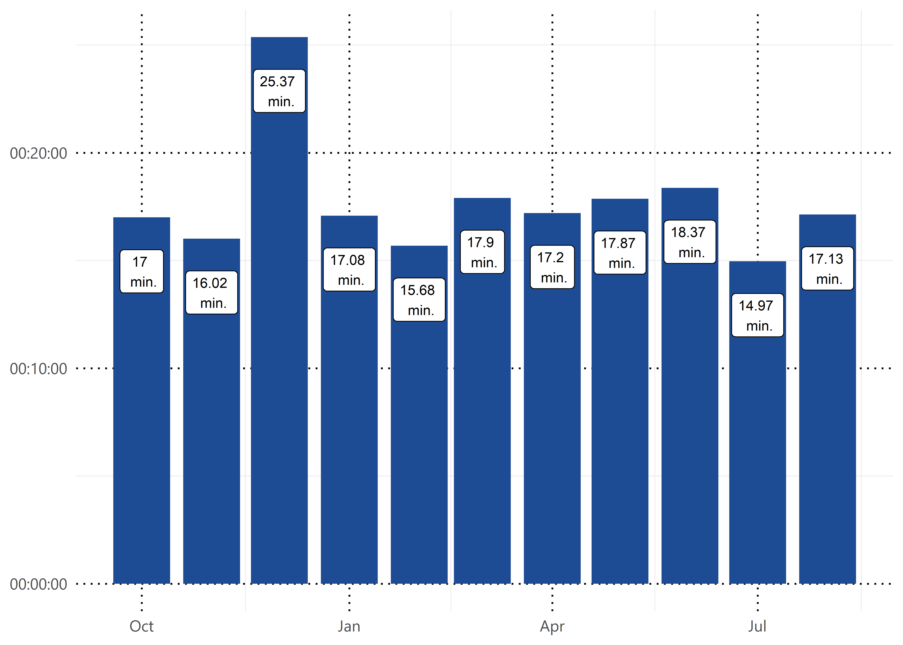

Section: 2 Animal Services
Guilford County Animal Services is responsible for general animal control, regulation and enforcement of animal-related ordinances in the County as well as preventing the occurrence and spread of rabies. Animals that are lost and/or seized are secured and cared for at the Animal Shelter while Animal Control manages rabies prevention programs, responds to vicious animals and animal cruelty, issues warrants and citations to violators, and seizes animals from owners found in violation.
2.1 Monthly Call Volume
How many calls do we receive each month?
2.2 Overall Average Response Time
What’s our average response time for all calls? Our CAD systems tracks this in seconds so this metric is displayed in seconds.

2.3 Average Response Time by Jurisdiction
What is our average response time broken down by jurisdiction for the most recent month of available data?

2.4 Average Response Time by Day
What is our average response time broken down by day of the week for the most recent month of available data?

Priority Breakdown
Now we will break the calls down into priority designations.
2.5 First Priority Call Volume

2.6 First Priority Average Response Time
Average response time against our established 30 minute target.
2.7 Second Priority Call Volume

2.8 Second Priority Average Response Time
Average response time against our established 60 minute target (not shown).
2.9 Third Priority Call Volume
2.10 Third Priority Average Response Time
Average response time against our established 90 minute target (not shown).
2.11 All Other Priority Call Volume
2.12 All Other Priority Average Response Time
Average response time against our established 120 minute target (not shown).
